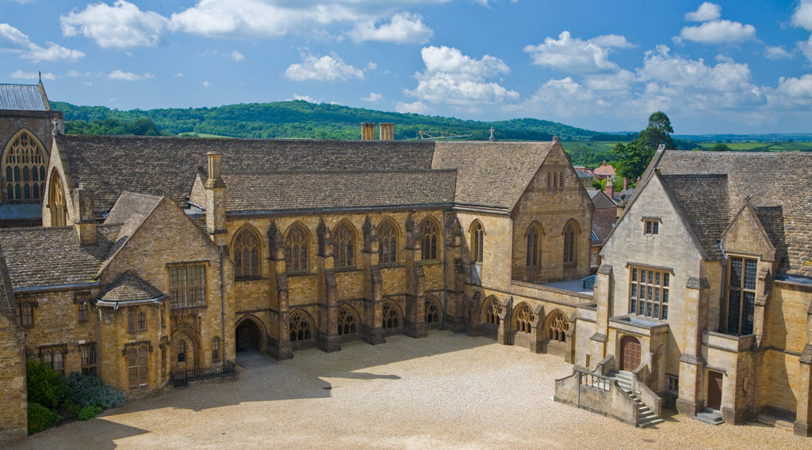

Turing was born on June 23, 1912 in London, England. He was educated at Sherborne School, where he showed an aptitude for mathematics and science. He went on to study mathematics at King's College, Cambridge, where he earned a fellowship and began working on his groundbreaking work on computability and the universal Turing machine.
Despite his many contributions to science and technology, Turing was persecuted by the British government for being gay, which was illegal at the time. He was forced to undergo chemical castration and eventually committed suicide in 1954. In 2009, the British government formally apologized